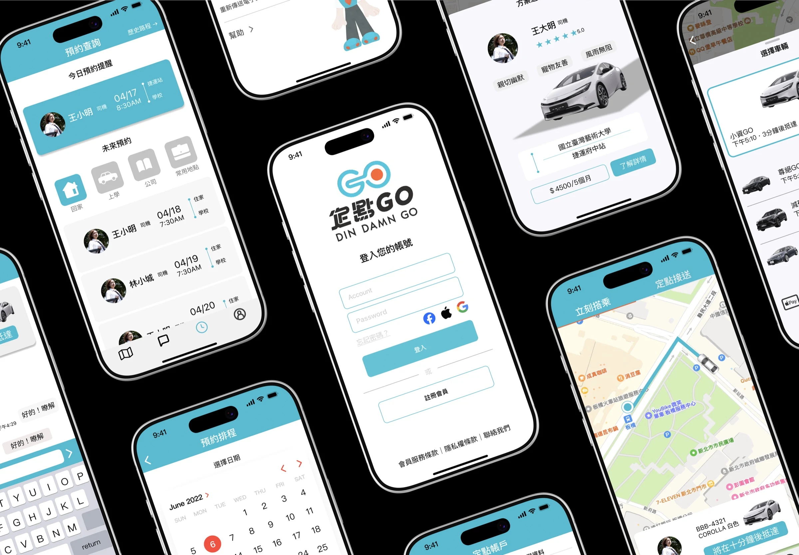
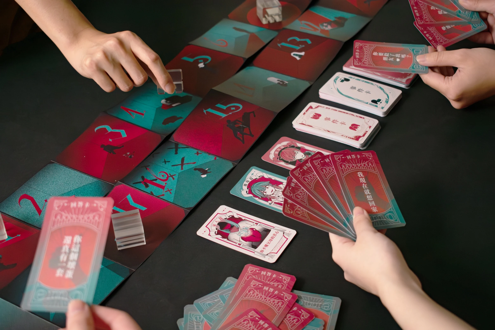

INITIALISING PARTICLE FIELD
SELECTED WORK · 01—05
專案作品
01BRAND EXPERIENCE · SERVICE DESIGN · PRODUCT
定點GO
從品牌識別延伸至數位產品，建立以固定路線、固定司機與固定時段為核心的日常接送體驗。
查看完整案例 ↗
02INTERACTIVE WEB · NARRATIVE · FRONT-END
我獨自 EMO
以情緒勒索為題的畢業製作網站，透過敘事捲動、漂浮卡牌、3D 模型與情境測驗，將心理教育內容轉化為可探索的互動體驗。
進入互動網站 ↗
03 / OTHER PROJECTS
其他作品


ABOUT
畢業於國立臺灣藝術大學視覺傳達設計系。擅長將視覺美學轉化為商業行銷力，具備從廣告設計、網站設計到品牌社群視覺的全方位執行能力。能穩定產出高品質視覺內容，能精準掌握產業需求並高效執行專案。
同時我也具備 HTML、CSS 的實作理解，能在設計階段同步考慮響應式行為、效能與工程協作。
CONTACT